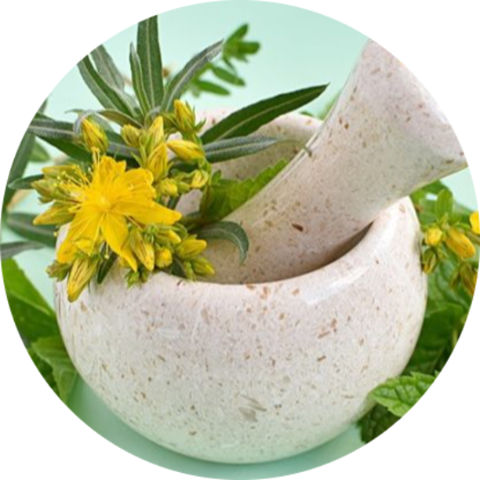
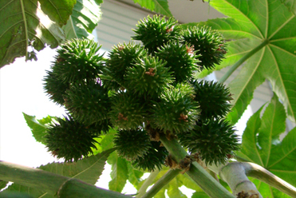
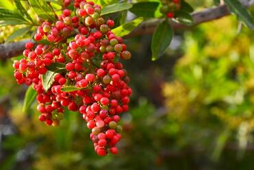
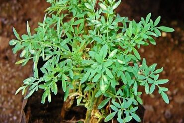
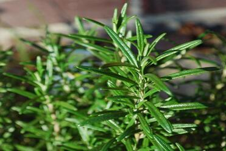
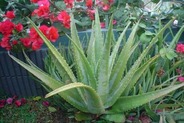
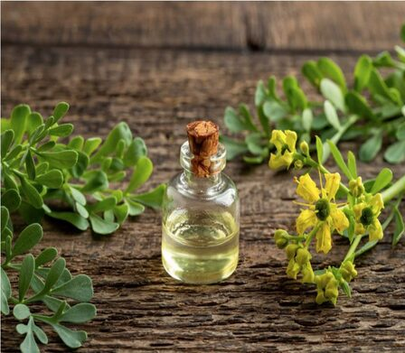
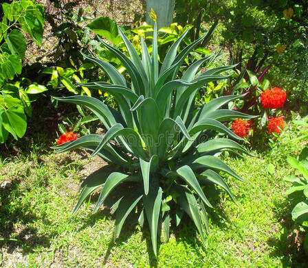
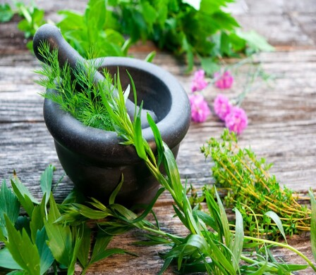
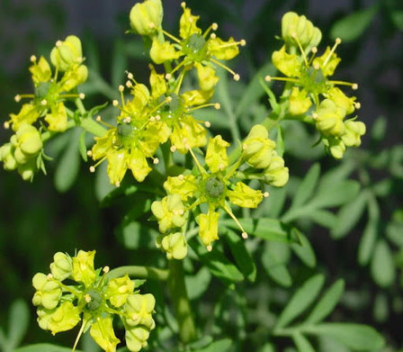

<!DOCTYPE html>
<html lang="en">
   <head>
      <!-- basic -->
      <meta charset="utf-8">
      <meta http-equiv="X-UA-Compatible" content="IE=edge">
      <!-- mobile metas -->
      <meta name="viewport" content="width=device-width, initial-scale=1">
      <meta name="viewport" content="initial-scale=1, maximum-scale=1">
      <!-- site metas -->
      <title>Greeno</title>
      <meta name="keywords" content="">
      <meta name="description" content="">
      <meta name="author" content="">
      <!-- bootstrap css -->
      <link rel="stylesheet" href="css/bootstrap.min.css">
      <!-- style css -->
      <link rel="stylesheet" href="css/style.css">
      <!-- Responsive-->
      <link rel="stylesheet" href="css/responsive.css">
      <!-- fevicon -->
      <link rel="icon" href="images/fevicon.png" type="image/gif" />
      <!-- Scrollbar Custom CSS -->
      <link rel="stylesheet" href="css/jquery.mCustomScrollbar.min.css">
      <!-- Tweaks for older IEs-->
      <link rel="stylesheet" href="https://netdna.bootstrapcdn.com/font-awesome/4.0.3/css/font-awesome.css">
      <link rel="stylesheet" href="https://cdnjs.cloudflare.com/ajax/libs/fancybox/2.1.5/jquery.fancybox.min.css" media="screen">
      <!--[if lt IE 9]>
      <script src="https://oss.maxcdn.com/html5shiv/3.7.3/html5shiv.min.js"></script>
      <script src="https://oss.maxcdn.com/respond/1.4.2/respond.min.js"></script><![endif]-->
   </head>
   <!-- body -->
   <body class="main-layout">
      <!-- loader  -->
      <div class="loader_bg">
         <div class="loader"></div>
      </div>
      <!-- end loader -->
      <!-- header -->
      <header>
         <!-- header inner -->
         <div class="header">
            <div class="container">
               <div class="row">
                  <div class="col-xl-3 col-lg-3 col-md-3 col-sm-3 col logo_section">
                     <div class="full">
                        <div class="center-desk">
                           <div class="logo"> <a href="index.html"></a> </div>
                        </div>
                     </div>
                  </div>
                  <div class="col-xl-9 col-lg-9 col-md-9 col-sm-9">
                     <div class="menu-area">
                        <div class="limit-box">
                           <nav class="main-menu">
                              <ul class="menu-area-main">
                                 <li class="active"> <a href="#">INICIO</a> </li>
                                 <li> <a href="#about">ACERCA</a> </li>
                                 <li><a href="#plant">PLANTAS</a></li>
                                 <li><a href="#gallery">GALERIAS</a></li>
                                 <li><a href="#contact">CONTACTO</a></li>
                                 <li class="last"><a href="#"></a></li>
                              </ul>
                           </nav>
                        </div>
                     </div>
                  </div>
               </div>
            </div>
         </div>
         <!-- end header inner -->
      </header>
      <!-- end header -->
      <section >
         <div id="main_slider" class="carousel slide banner-main" data-ride="carousel">
            <ol class="carousel-indicators">
               <li data-target="#main_slider" data-slide-to="0" class="active"></li>
               <li data-target="#main_slider" data-slide-to="1"></li>
               <li data-target="#main_slider" data-slide-to="2"></li>
            </ol>
            <div class="carousel-inner">
               <div class="carousel-item active">
                  <div class="container">
                     <div class="row marginii">
                        <div class="col-xl-6 col-lg-6 col-md-6 col-sm-12">
                           <div class="carousel-caption ">
                              <h1>Bienvenidos a <strong class="color">Hierbas Medicinales Oaxaqueñas</strong></h1>
                              <p>La herbolaria, conocida también como medicina alternativa, es una tradición médicina muy antigua, basada en el uso de plantas 
                                 y hierbas para prevenir y curar enfermdades.</p>
                              <a class="btn btn-lg btn-primary" href="#" role="button">sobre nosotros</a>
                              <a class="btn btn-lg btn-primary" href="#" role="button">Contacto</a>
                           </div>
                        </div>
                        <div class="col-xl-6 col-lg-6 col-md-6 col-sm-12">
                           <div class="img-box">
                              <figure></figure>
                           </div>
                        </div>
                     </div>
                  </div>
               </div>
               <div class="carousel-item">
                  <div class="container">
                     <div class="row marginii">
                        <div class="col-xl-6 col-lg-6 col-md-6 col-sm-12">
                           <div class="carousel-caption ">
                              <h1>Bienvenidos  <strong class="color">a plantas medicinales</strong></h1>
                              <p>La Organización Mundial 
                                 de la Salud (OMS) reconoce su efectividad al incluirla en los esquemas públicos de salud.</p>
                              <a class="btn btn-lg btn-primary" href="#" role="button">sobre nosotros </a>
                              <a class="btn btn-lg btn-primary" href="#" role="button">Contacto</a>
                           </div>
                        </div>
                        <div class="col-xl-6 col-lg-6 col-md-6 col-sm-12">
                           <div class="img-box ">
                              <figure></figure>
                           </div>
                        </div>
                     </div>
                  </div>
               </div>
               <div class="carousel-item">
                  <div class="container">
                     <div class="row marginii">
                        <div class="col-xl-6 col-lg-6 col-md-6 col-sm-12">
                           <div class="carousel-caption ">
                              <h1> <strong class="color">Importancia </strong></h1>
                              <p>Usando las 
                                 plantas como instrumento para curar enfermedades o «sacar los sustos», como les llaman en diversos contextos. Sus acciones curativas, más que 
                                 proporcionar un simple té o dar una «limpia», 
                                 constituyen un ritual en la vida cotidiana de diversas regiones y comunidades que estrecha redes 
                                 sociales.</p>
                              <a class="btn btn-lg btn-primary" href="#" role="button">sobre nosotros </a>
                              <a class="btn btn-lg btn-primary" href="#" role="button">Contacto</a>
                           </div>
                        </div>
                        <div class="col-xl-6 col-lg-6 col-md-6 col-sm-12">
                           <div class="img-box">
                              <figure></figure>
                           </div>
                        </div>
                     </div>
                  </div>
               </div>
            </div>
            <a class="carousel-control-prev" href="#main_slider" role="button" data-slide="prev">
            <i class='fa fa-angle-left'></i></a>
            <a class="carousel-control-next" href="#main_slider" role="button" data-slide="next">
            <i class='fa fa-angle-right'></i>
            </a>
         </div>
      </section>
      <!-- plant -->
      <div id="plant" class="plants">
         <div class="container">
            <div class="row">
               <div class="col-md-12 ">
                  <div class="titlepage">
                     <h2>HIERBAS AMARGAS</h2>
                     <span>Su sabor es amargo y fuerte. 
                        Con ellas se purifica el organismo y , 
                        en general, se trabaja la parte media del cuerpo, 
                        que incluye órganos como el hígado, 
                        el estómago, el páncreas, los intestinos 
                        y los riñones.</span>
                  </div>
               </div>
            </div>
         </div>
         <div class="container">
            <div class="row">
               <div class="col-xl-4 col-lg-4 col-md-6 col-sm-12">
                  <div class="plants-box">
                     <figure></figure>
                     <h3> DIENTE DE LEÓN</h3>
                     <p>Propiedades terapéuticas</p>
                           <p>* Mata los microorganismos que causan infecciones en las vías urinarias e impide que 
                              éstas se propaguen. </p>
                           <p>* Es diurética y depura la sangre.</p>
                           <p>* Regenera tejidos, cartílagos y huesos. </p>
                           <p>* Corrige problemas de hipertensión y atenúa los efectos de la diabetes, pues contribuye a reducir el azúcar en la sangre.</p>
                           <p>* Sus hojas contienen vitamina A y C en alta proporción.</p>
                           <p>* Facilita la digestión.</p>
                           <p>* Reconstituyente	 y	sudorífica, estimula la secreción de bilis.</p>
                           <p>* Inhibe la tendencia al consumo de alcohol</p>
                        <p>Usos</p>
                           <p>* Se recomienda para quienes padecen 
                           alteraciones del aparato digestivo a consecuencia de alguna disfunción estomacal o intestinal.</p>
                           <p>También, para quienes 
                              tienen enfermedades del hígado y de la 
                              piel motivadas por secreciones biliares 
                              anómalas</p>
                              <p>Porciones </p>
                           <p>* Para preparar té como infusión:	a	una
                              cucharada o puño de mano de hojas secas agregar una taza de agua hirviendo y dejar en reposo durante diez minutos. 
                              Pueden tomarse de dos a tres tazas diarias. Se emplea para purificar la sangre.</p>
                           <p>* Para preparar té como cocción:	a	seis cucharaditas	 o	pizcas de raíz machacada añadir un litro de agua; cocer a fuego lento diez minutos, colar y tomar un vaso en ayunas durante varios días.</p>
                           <p>* Baños de 
                              asiento: preparar una tina con agua caliente y agregar dos puños de mano de hojas 
                              y	flores secas.</p> 
                           <p>*Puede consumirse cruda, 
                              en ensaladas, o extraerse su jugo.</p>
                           </p>
                        <p>Contradicciones  </p>
                           <p>No administrar a menores de dos años.</p>

                  </div>
               </div>
               <div class="col-xl-4 col-lg-4 col-md-6 col-sm-12">
                  <div class="plants-box">
                     <figure></figure>
                     <h3> HIGUERILLA</h3>
                     <p>Propiedades terapéuticas</p>
                        <p>* Sedante.</p>
                        <p>* Desinflamatoria.</p>
                        <p>* Purgante, no irrita el tubo digestivo.</p>
                        <p>Antiséptica, 
                           antibacteriana y cicatrizante.</p>
                        <p>* Cura la gripa, las anginas y el 
                           sarampión</p>
                        <p>* Atempera la fiebre</p>
                     <p>Usos</p>
                           <p>* En forma de aceite de ricino, se usa 
                              como purgante para tratar problemas digestivos y estomacales.</p>
                           <p>* También se emplea para atender padecimientos asociados 
                              a la diabetes y para curar contracciones 
                              musculares, golpes, cortaduras leves, granos y picaduras de insectos.</p>
                           <p>* Es útil para 
                              lustrar el cabello, bajar la fiebre	y	quitar el
                              dolor de cabeza.</p>
                     <p>Porciones</p>
                           <p>* Como purga, se recomienda media cucharadita de aceite de ricino para descargar el estómago.</p>
                           <p>* La semilla macerada 
                              se emplea, en aplicación cutánea, para 
                              padecimientos consecuencia de la diabetes, contracciones musculares, golpes, 
                              etcétera.</p>
                           <p>* Para aliviar trastornos digestivos y estomacales, colocar una hoja sobre 
                              el estómago y, como plantilla, una hoja en 
                              cada pie</p>
                           <p>* Poner una hoja sobre la frente 
                              para atenuar dolores de cabeza.</p>
                     <p>Contraindicaciones</p>
                              <p>*  La ricina es un alcaloide formado por dos 
                                 proteínas: una tóxica	 y	 otra hemoaglutinante; la mayor concentración de estas sustancias se encuentra en las semillas, por lo 
                                 que no se recomienda el empleo de estas 
                                 últimas como purgante.</p>
                  </div>
               </div>
               <div class="col-xl-4 col-lg-4 col-md-6 col-sm-12">
                  <div class="plants-box">
                     <figure></figure>
                     <h3> PIRUL</h3>
                     <p>Propiedades terapeúticas</p>
                        <p>* Astringente, disminuye la secreción de 
                           colesterol maligno.</p>
                        <p>* Balsámico, alivia y cicatriza vías respiratorias,	y	saca las flemas.</p>
                        <p>* Purgante, evacua lo que se considera 
                           malo</p>
                        <p>* ulnerario, cura heridas y llagas.</p>
                        <p>* Emenagogo, provoca la menstruación.</p>
                        <p>* Combinado con otras plantas se utiliza 
                           para la cura del susto.</p>
                     <p>Usos</p>
                           <p>* Las ramas tiernas, masticadas, se emplean para limpiar los dientes	y	afirmar las
                              encías.</p>
                           <p>* El cocimiento de las hojas se usa 
                              para tratamiento de enfermedades de la 
                              piel y de diversas úlceras.</p>
                           <p>* La resina deshumedecida, empleada como cataplasma para curar heridas
                              y llagas, también es útil para facilitar la cicatrización y, diluida en agua, tiene efecto 
                              purgante.</p>
                     <p>Porciones </p>
                        <p>* Para hacer té como cocción:	 a	 una cucharada	 o	 puño de dedos
                           de hojas añadir una taza de agua y cocer a fuego lento durante diez minutos.</p>
                        <p>* Para preparar compresas: impregnar la resina en un paño	y	aplicarla en el área afectada.</p>
                        <p>* Para baño 
                           de pies: colocar dos trozos de corteza de
                           30 cm en un recipiente con agua y cocer 
                           a fuego lento durante diez minutos. Verter 
                           en una bandeja donde puedan sumergirse 
                           los pies.</p>
                        <p>* Como purga:
                           diluir una cucharadita o pizca de resina 
                           en un pequeño vaso de agua.</p>
                  </div>
               </div>
               <div class="col-xl-4 col-lg-4 col-md-6 col-sm-12">
                  <div class="plants-box">
                     <figure></figure>
                     <h3> RUDA</h3>
                     <p>Propiedades terapéuticas</p>
                        <p>* Antiespasmódica, calma desórdenes nerviosos.</p>
                        <p>* Emenagoga, provoca la menstruación.</p>
                        <p>* Digestiva y antiparasitaria.</p>
                     <p>Usos</p>
                        <p>* Útil para padecimientos menstruales y 
                           digestivos, y para hemorragias internas.</p>
                        <p>* Estimula la secreción de las glándulas 
                           mamarias durante la lactancia.</p>
                        <p>* Se recomienda como tratamiento para sarna, 
                           reumatismo, golpes y distensión muscular.</p>
                        <p>* Sirve como repelente de mosquitos.</p>
                     <p>Porciones</p>
                           <p>* Para preparar té como infusión:	a	cuatro cucharaditas o pizcas de hojas añadir 
                              una taza de agua hirviendo y dejar en 
                              reposo durante diez minutos. Pueden tomarse hasta tres tazas diarias.</p>
                           <p>* Para maceración: machacar cuatro cucharaditas	o	
                              pizcas de hierba seca, u ocho cucharaditas 
                              o pizcas de hierba fresca, y sumergirlas en 
                              una taza de agua. Dejar en reposo entre 
                              ocho y 12 horas.</p>
                           <p>* Como repelente: colocar una rama de la hierba cerca del cuerpo en el sitio donde se pernocte.</p>
                     <p>Contraindicaciones</p>
                           <p>* No debe ser ingerida por mujeres embarazadas, ya que se le considera abortiva.</p>
                           
                  </div>
               </div>
               <div class="col-xl-4 col-lg-4 col-md-6 col-sm-12">
                  <div class="plants-box">
                     <figure></figure>
                     <h3> ROMERO</h3>
                     <p>Propiedades terapéuticas</p>
                        <p>* Contiene antioxidantes.</p>
                        <p>* Posee propiedades digestivas y descongestiona las vías 
                           respiratorias.</p>
                        <p>* Anima la menstruación</p>
                     <p>Usos</p>
                        <p>* El té se emplea como digestivo, animador 
                           menstrual o descongestivo.</p>
                        <p>* En forma decataplasma sirve para conservar alimentos.</p>
                        <p>* Macerado en alcohol durante una semana es útil para fricciones corporales.</p>
                     <p>Porciones</p>
                           <p>* Para prepararté como infusión:	a	cuatro
                              cucharaditas o pizcas de hojas añadir una 
                              taza de agua hirviendo y dejar en reposo durante diez minutos. Pueden tomarse 
                              hasta tres tazas diarias.</p>
                           <p>* Para preparar 
                              aceite medicinal broncodilatador:	a	un cucharón o puño de mano de hierbas secas 
                              agregar medio litro de aceite comestible 
                              y dejar en reposo durante dos o tres semanas. Se aplica frotando el pecho.</p>
                     <p>Contraindicaciones</p>
                           <p>* El aceite esencial no debe ser ingerido 
                              sin diluir, porque es irritante.</p>
                           <p>* Los tratamientos con romero están contraindicados 
                              para mujeres embarazadas o en lactancia.</p>  
                  </div>
               </div>
               <div class="col-xl-4 col-lg-4 col-md-6 col-sm-12">
                  <div class="plants-box">
                     <figure></figure>
                     <h3> MAGUEY</h3>
                     <p>Propiedades terapéuticas</p>
                        <p>* Es inmunoestimulante, es decir, excita el 
                           sistema inmunológico que nos protege de 
                           infecciones oportunistas.</p>
                        <p>* Tiene efectivas unciones cicatrizantes y propiedades antiinflamatorias.</p>
                        <p>*  Es útil para el tratamiento 
                           de diversos padecimientos de la piel y problemas bronquiales</p>
                        <p>* Posee virtudes analgésicas y reguladoras del organismo.</p>
                     <p>Usos</p>
                     <p>* Tanto la pulpa transparente interior como 
                        la resina amarilla exudada obtenida al cortar una hoja sirven para curar granos, abcesos, forúnculos, algunos tipos de herpes, 
                        acné, verrugas, dermatitis seborreica, micosis, pie de atleta, callosidades y picaduras 
                        de insectos.</p>
                     <p>* Ante quemaduras, regenera 
                        tejidos y ayuda a cicatrizarlos.</p>
                     <p>*  Contribuye a disminuir dolores debidos a golpes, esguinces, luxaciones o dolencias musculares, 
                        artríticas y reumáticas</p>
                     <p>* Puede emplearse 
                        en heridas, llagas, ulceraciones externas, escoriaciones y costras consecuencia de largas 
                        permanencias en cama</p>
                     <p>* En forma de té 
                        regula los sistemas circulatorio, respiratorio, 
                        digestivo, intestinal y reproductor; modera 
                        las secreciones del hígado, es decir, la bilis</p>
                     <p>* También es benéfica aplicada en articulaciones, tendones y músculos</p>
                  <p>Porciones</p>
                        <p>* En forma de cataplasma la hoja o penca, 
                           con una hendidura a lo largo, se coloca sobre quemaduras, heridas, piel seca, infecciones por hongos o picaduras de insectos.</p>
                        <p>* Para elaborar ungüento, abrir varias hojas 
                           de sábila para obtener gran cantidad de 
                           pulpa; cocerla hasta formar una pasta espesa y guardarla en frascos limpios y en un lugar fresco. Se utiliza igual que las hojas.</p>
                        <p>Al añadir cuatro cucharadas de pulpa a tres 
                           litros de agua hirviendo se preparan vaporizaciones para la congestión bronquial.</p>
                        <p>* Para hacer jugo, se diluye una cucharada 
                           sopera de pulpa en medio vaso de agua y 
                           se toma de una a tres veces al día antes de 
                           las comidas.</p>
                  <p>Contradicciones</p>
                     <p>* No se recomienda su consumo oral a 
                        mujeres embarazadas ni a personas con 
                        hemorroides, ya que los glúcidos de la antraquinona que contiene la planta son purgantes</p>
                     <p>* El uso excesivo de las hojas puede 
                        producir vómito.</p>
                     <p>* La piel de la penca es 
                        tóxica al ingerirla.</p>
                  </div>
               </div>
            </div>
         </div>
      </div>
      <!-- end plant -->
      <!-- about -->
      <div id="about" class="about">
         <div class="container">
            <div class="row">
               <div class="col-xl-6 col-lg-6 col-md-6 col-sm-12">
                  <div class="col-xl-12 col-lg-12 col-md-12 col-sm-12">
                     <div class="about-box">
                        <h2>50</h2>
                        <div class="white-bg">
                           <span>Satisfaction</span> 
                        </div>
                     </div>
                  </div>
                  <div class="col-xl-12 col-lg-12 col-md-12 col-sm-12">
                     <div class="about-box">
                        <h2>50</h2>
                        <div class="white-bg">
                           <span>Free Delivery</span> 
                        </div>
                     </div>
                  </div>
                  <div class="col-xl-12 col-lg-12 col-md-12 col-sm-12">
                     <div class="about-box">
                        <h2>50</h2>
                        <div class="white-bg">
                           <span>Store Locators</span> 
                        </div>
                     </div>
                  </div>
               </div>
               <div class="col-xl-6 col-lg-6 col-md-6 col-sm-12">
                  <div class="about-box">
                     <div class="titlepage">
                        <h2>Sobre nosotros</h2>
                        <span> hola yo me llamo Ana Celina Moreno Flores estudiante de la ingeniera en Informatica 
                           del Instituto Tecnológico del Valle de Oaxaca, esta página fue creda para realizar una práctica de la materia de 
                        de programacion en ambiente cliente/servidor, la información del contenido fue obtenido del libro
                        Herbolaria oaxaqueña 
                        para la salud escritas por Ángela Méndez Hernández
                        Adalberta Alejandrina Hernández Hernández
                        María del Carmen López Santiago
                        Jael Morales López </span> 
                        <div class="read-more">
                           <a  href="#">Read More</a>
                        </div>
                     </div>
                  </div>
               </div>
            </div>
         </div>
      </div>
      <!-- end about -->
      <!--Gallery -->
      <div id="gallery" class="Gallery">
      <div class="container">
         <div class="row">
            <div class="col-md-12">
               <div class="titlepage">
                  <h2>Galeria </h2>
               </div>
            </div>
         </div>
      </div>
      <div class="container-fluid margin-r-l">
         <div class="row">
            <div class="col-xl-3 col-lg-3 col-md-3 col-sm-12 thumb">
               <div class="Gallery-box">
                  <figure>
                     <a href="images/1.jpg" class="fancybox" rel="ligthbox">
                     
                     </a>
                     <span class="hoverle">
                     <a href="images/1.jpg" class="fancybox" rel="ligthbox">View</a>
                     </span>  
                  </figure>
               </div>
            </div>
            <div class="col-xl-3 col-lg-3 col-md-3 col-sm-12 thumb">
               <div class="Gallery-box">
                  <figure>
                     <a href="images/2.jpg" class="fancybox" rel="ligthbox">
                     
                     </a>
                     <span class="hoverle">
                     <a href="images/1.jpg" class="fancybox" rel="ligthbox">View</a>
                     </span>
                  </figure>
               </div>
            </div>
            <div class="col-xl-6 col-lg-6 col-md-6 col-sm-12 thumb">
               <div class="Gallery-box">
                  <figure>
                     <a href="images/3.jpg" class="fancybox" rel="ligthbox">
                     
                     </a>
                     <span class="hoverle">
                     <a href="images/3.jpg" class="fancybox" rel="ligthbox">View</a>
                     </span>
                  </figure>
               </div>
            </div>
            <div class="col-xl-3 col-lg-3 col-md-3 col-sm-12 thumb">
               <div class="Gallery-box">
                  <figure>
                     <a href="images/4.jpg" class="fancybox" rel="ligthbox">
                     
                     </a>
                     <span class="hoverle">
                     <a href="images/4.jpg" class="fancybox" rel="ligthbox">View</a>
                     </span> 
                  </figure>
               </div>
            </div>
            <div class="col-xl-3 col-lg-3 col-md-3 col-sm-12 thumb">
               <div class="Gallery-box">
                  <figure>
                     <a href="images/5.jpg" class="fancybox" rel="ligthbox">
                     
                     </a>
                     <span class="hoverle">
                     <a href="images/5.jpg" class="fancybox" rel="ligthbox">View</a>
                     </span> 
                  </figure>
               </div>
            </div>
            <div class="col-xl-6 col-lg-6 col-md-6 col-sm-12">
               <div class="Gallery-box">
                  <figure>
                     <a href="images/6.jpg" class="fancybox" rel="ligthbox">
                     
                     </a>
                     <span class="hoverle">
                     <a href="images/6.jpg" class="fancybox" rel="ligthbox">View</a>
                     </span>
                  </figure>
               </div>
            </div>
         </div>
      </div>
      <!-- end Gallery -->
      <!--contact -->
      <div id="contact" class="contact">
         <div class="container">
            <div class="row">
               <div class="col-md-12">
                  <div class="titlepage">
                     <h2>Contact Us</h2>
                  </div>
               </div>
            </div>
            <div class="row">
               <div class="col-xl-4 col-lg-4 col-md-12 col-sm-12 paddimg-right">
                  <div class="row">
                     <div class="col-xl-12 col-lg-12 col-md-12 col-sm-12">
                        <form>
                           <div class="row">
                              <div class="col-xl-12 col-lg-12 col-md-12 col-sm-12">
                                 <input class="form-control" placeholder="Name" type="text" name="Name">
                              </div>
                              <div class="col-xl-12 col-lg-12 col-md-12 col-sm-12">
                                 <input class="form-control" placeholder="Email" type="text" name="Email">
                              </div>
                              <div class="col-xl-12 col-lg-12 col-md-12 col-sm-12">
                                 <input class="form-control" placeholder="Phone" type="text" name="Phone">
                              </div>
                              <div class="col-xl-12 col-lg-12 col-md-12 col-sm-12">
                                 <textarea class="textarea>" placeholder="Message" type="text" name="Message"></textarea>
                              </div>
                              <div class="col-xl-12 col-lg-12 col-md-12 col-sm-12">
                                 <a href="#">Read More</a>
                              </div>
                           </div>
                        </form>
                     </div>
                     <div class="col-xl-12 col-lg-12 col-md-12 col-sm-12">
                        <div class="map_section">
                           <figure></figure>
                        </div>
                     </div>
                  </div>
               </div>
               <div class="col-xl-8 col-lg-8 col-md-12 col-sm-12 paddimg-left">
                  <div class="Nursery-img">
                     <figure>
                        
                        <div class="text-box">
                           <h3>The Best </h3>
                        </div>
                     </figure>
                  </div>
               </div>
            </div>
         </div>
      </div>
      <!-- end contact -->
      <!-- footer -->
      <footer>
         <div id="contact" class="footer">
            <div class="container">
               <div class="row pdn-top-30">
                  <div class="col-md-12 ">
                     <div class="footer-box">
                        <div class="headinga">
                           <h3>Dirección</h3>
                           <span>OAXACA, OAXACA</span>
                           <p>(+ 52 98765348)</p>
                        </div>
                        <ul class="location_icon">
                           <li> <a href="#"></a></li>
                           <li> <a href="#"></a></li>
                           <li> <a href="#"></a></li>
                           <li> <a href="#"></a></li>
                        </ul>
                        <div class="menu-bottom">
                           <ul class="link">
                              <li> <a href="#">INICIO</a></li>
                              <li> <a href="#">SOBRE NOSTROS</a></li>
                              <li> <a href="#"> PLANTAS</a></li>
                              <li> <a href="#">GALERIA</a></li>
                              <li> <a href="#"> CONTACTO</a></li>
                           </ul>
                        </div>
                     </div>
                  </div>
               </div>
            </div>
            <div class="copyright">
               <div class="container">
                  <p>Copyright 2019 All Rights Reserved Design By  <a href="https://html.design/">Free Html Templates</a></p>
               </div>
            </div>
         </div>
      </footer>
      <!-- end footer -->
      <!-- Javascript files-->
      <script src="js/jquery.min.js"></script>
      <script src="js/popper.min.js"></script>
      <script src="js/bootstrap.bundle.min.js"></script>
      <script src="js/jquery-3.0.0.min.js"></script>
      <script src="js/plugin.js"></script>
      <!-- sidebar -->
      <script src="js/jquery.mCustomScrollbar.concat.min.js"></script>
      <script src="js/custom.js"></script>
      <!-- javascript --> 
      <script src="js/owl.carousel.js"></script>
      <script src="https:cdnjs.cloudflare.com/ajax/libs/fancybox/2.1.5/jquery.fancybox.min.js"></script>
      <script>
         $(document).ready(function(){
         $(".fancybox").fancybox({
         openEffect: "none",
         closeEffect: "none"
         });
         
         $(".zoom").hover(function(){
         
         $(this).addClass('transition');
         }, function(){
         
         $(this).removeClass('transition');
         });
         });
         
      </script> 
   </body>
</html>